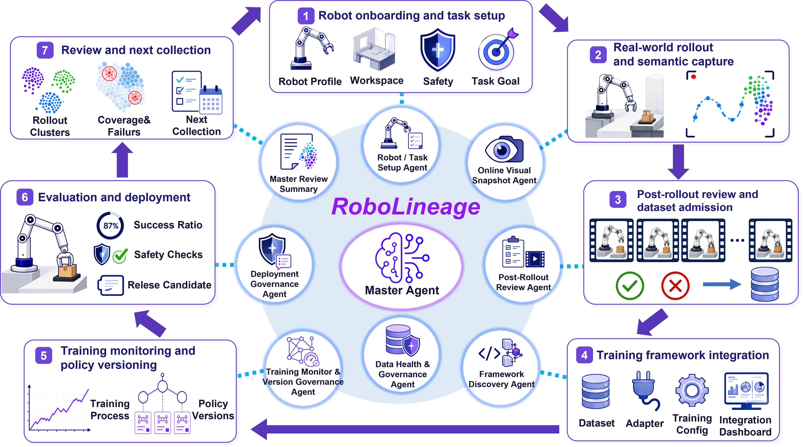
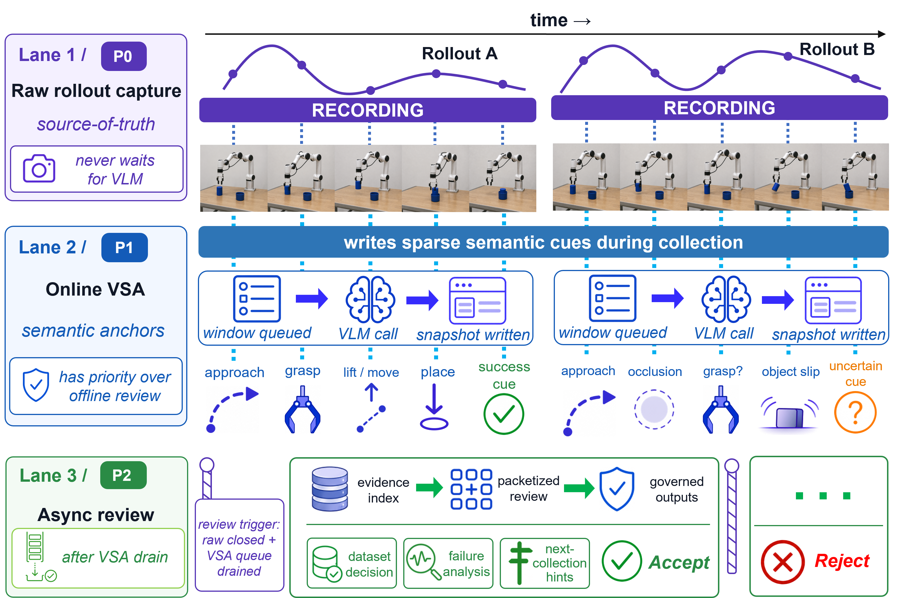
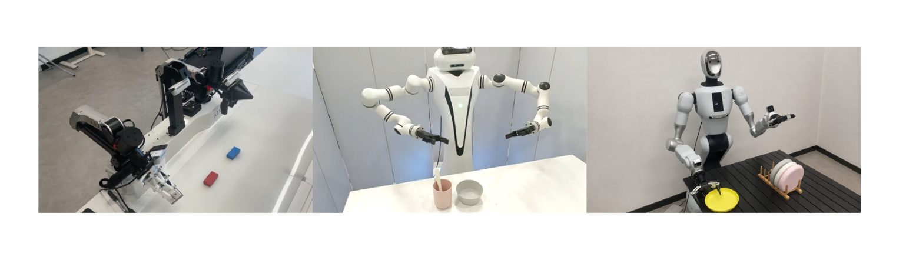
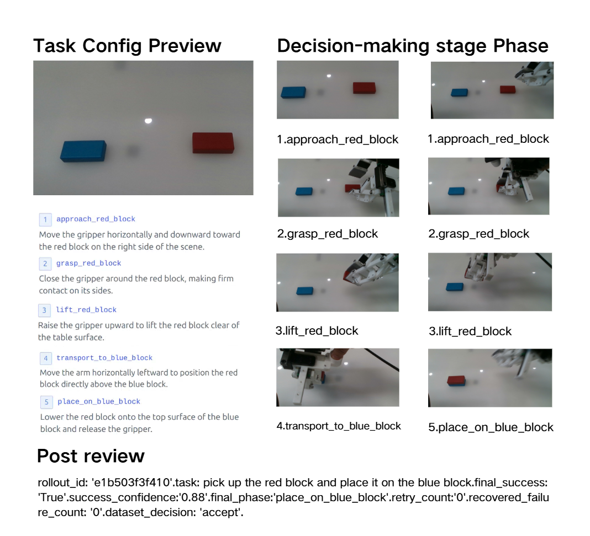
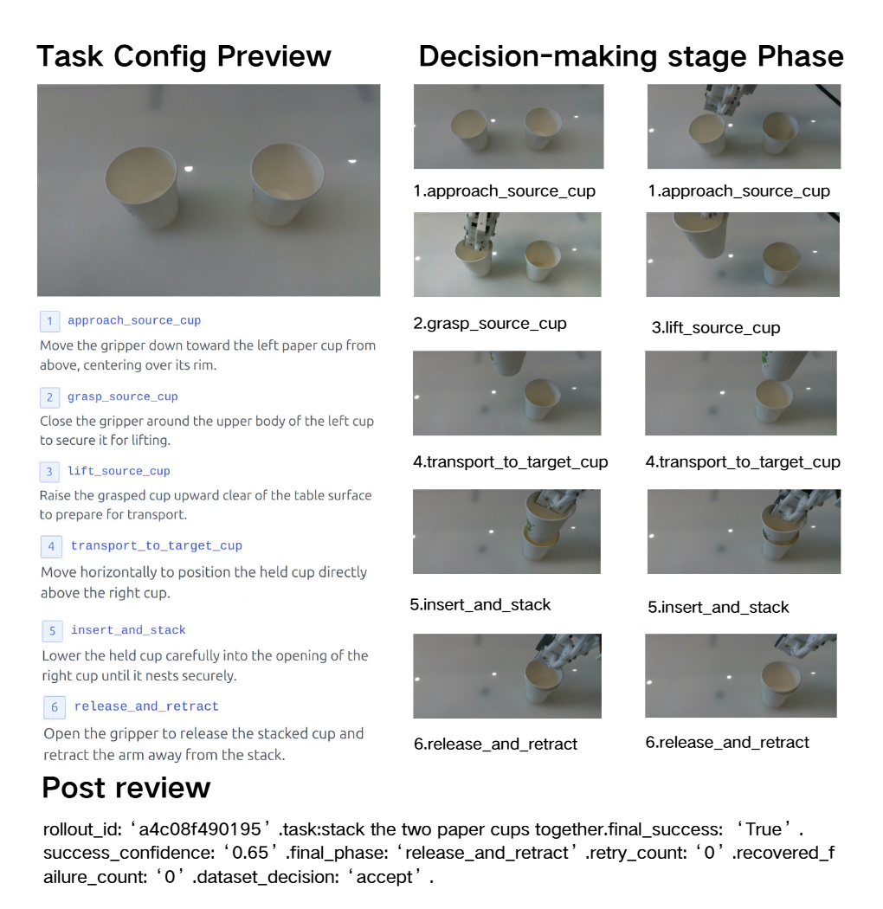
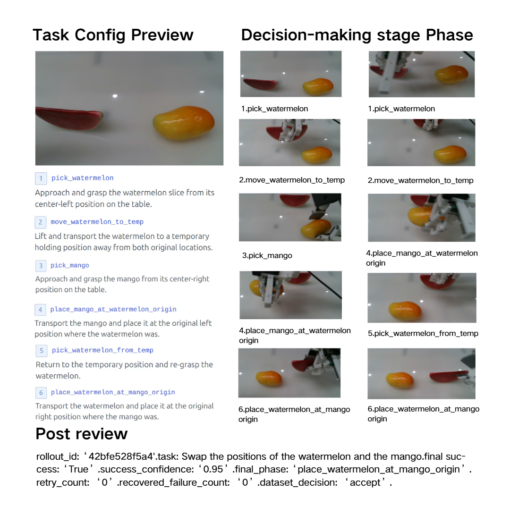
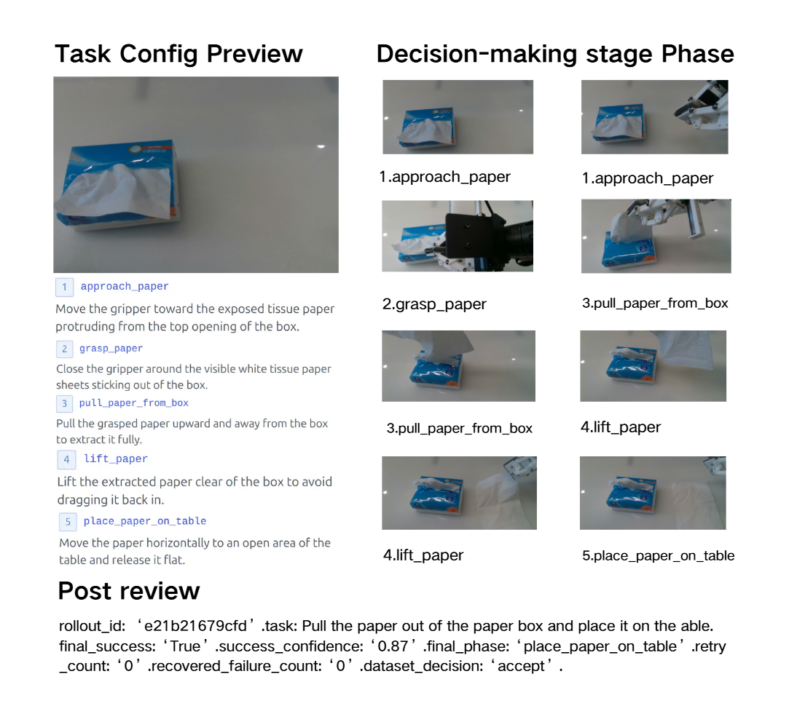
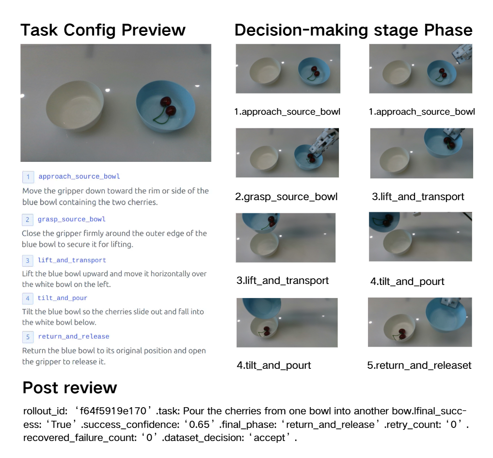
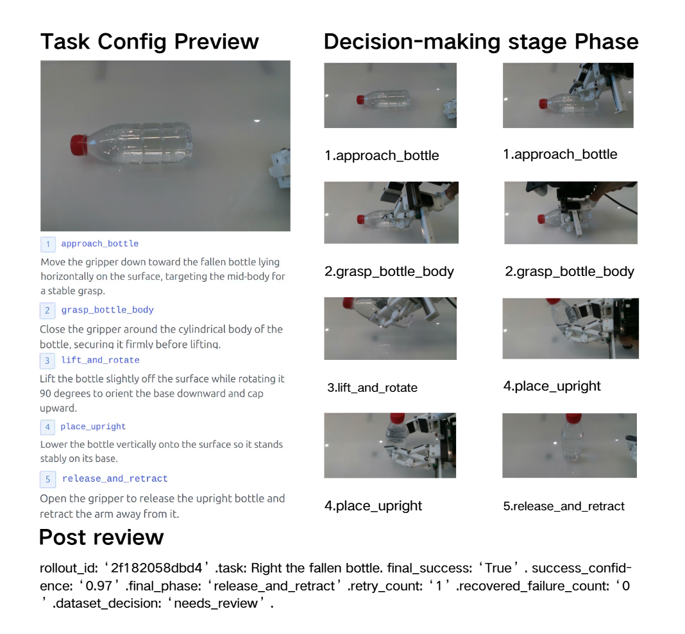
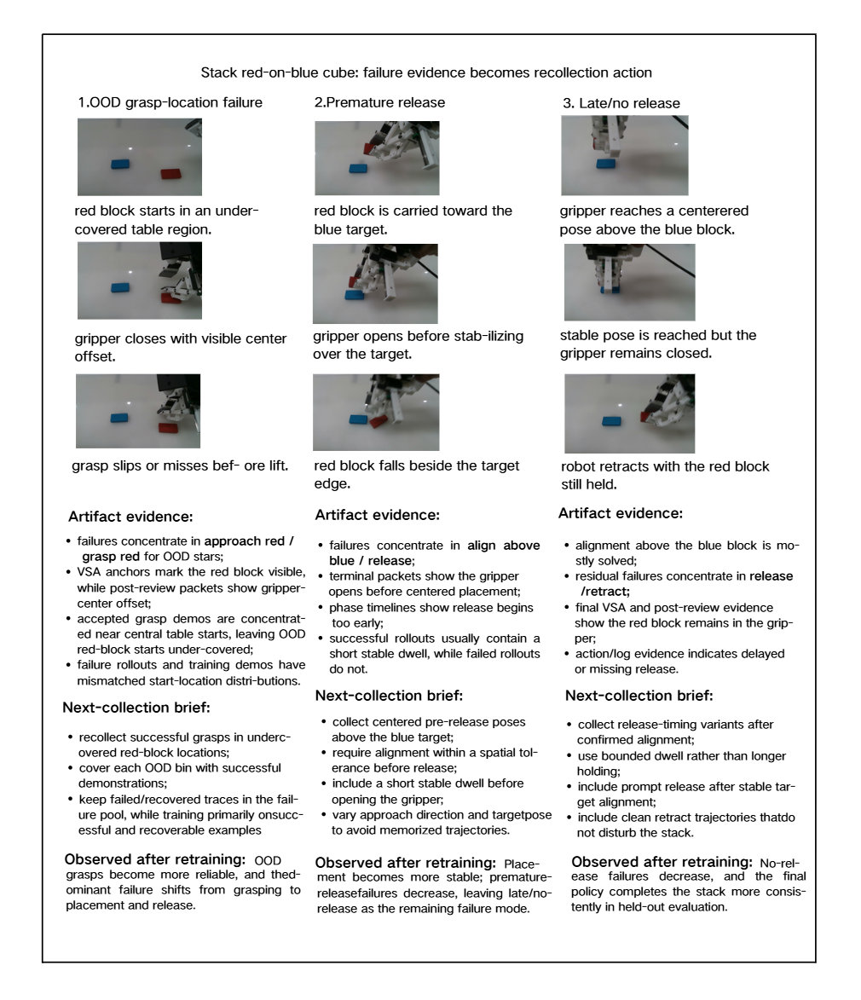

Red Cube on Blue
Block placement.
Modern robot policies improve through repeated data collection, review, retraining, evaluation, and release decisions, but the evidence connecting these steps is often scattered across local tools, scripts, and expert memory. RoboLineage makes this lifecycle explicit by representing rollouts, reviews, dataset decisions, training runs, policy metadata, evaluations, deployment recommendations, and next-collection plans as typed lineage artifacts. Agents interpret embodied rollout evidence, adapt accepted data to existing training stacks, maintain data health, and summarize cross-iteration state under explicit artifact boundaries. In real-robot manipulation workflows, RoboLineage makes routine policy iteration faster and more auditable while maintaining downstream policy performance.
Rollout evidence, dataset decisions, training records, evaluations, and recollection plans are linked across iterations.
Agents write structured evidence and summaries while validated artifacts carry lifecycle state.
The same interface spans ARX, Realman, and GALBOT G1 workflows with existing policy learners.
RoboLineage follows the loop from robot onboarding and semantic capture to review, dataset admission, training integration, evaluation, and next collection.

Raw recording remains the source of truth. Online visual snapshots provide sparse semantic anchors during collection; asynchronous review later turns evidence packets into governed dataset decisions.

The deployment clips cover the policy-quality categories in the paper and additional transfer, precision-placement, multi-object, and contact-rich tasks.

Block placement.
Pick-and-place.
Container insertion.
Object reorientation.
Container transfer.
Precision placement.
Contact-rich articulation.
Multi-object manipulation.
Deformable object handling.
Tool use.
Tennis-ball and golf-ball sorting.
Far-to-near transfer.
Sparse online snapshots and post-rollout packets make failure evidence inspectable before it becomes a dataset decision or recollection hint.






Failure analysis becomes data-collection action when review evidence is connected to dataset state, evaluation outcomes, and prior policy iterations.

We release RoboLineage in stages, starting from the lifecycle interfaces and examples and moving toward a runnable runtime.
Artifact contracts, schemas, prompt contracts, example traces, and release notes.
Validators, scoring scripts, mini replay pipeline, mock model routes, and preview examples.
Cleaned runtime, frontend console, ROS2 integration, review pipeline, training adapters, and evaluation tools.
Read the preprint on arXiv:2606.22142.
@article{luo2026robolineage,
title = {RoboLineage: Agent-Native Data Lifecycle Governance Across Robot Policy Iterations},
author = {Luo, Qian and Guo, Wentao and Qin, Zhennan and Guo, Nanchun and Zhao, Yunhan and Ma, Yi and Yang, Yanchao},
journal = {arXiv preprint arXiv:2606.22142},
year = {2026}
}